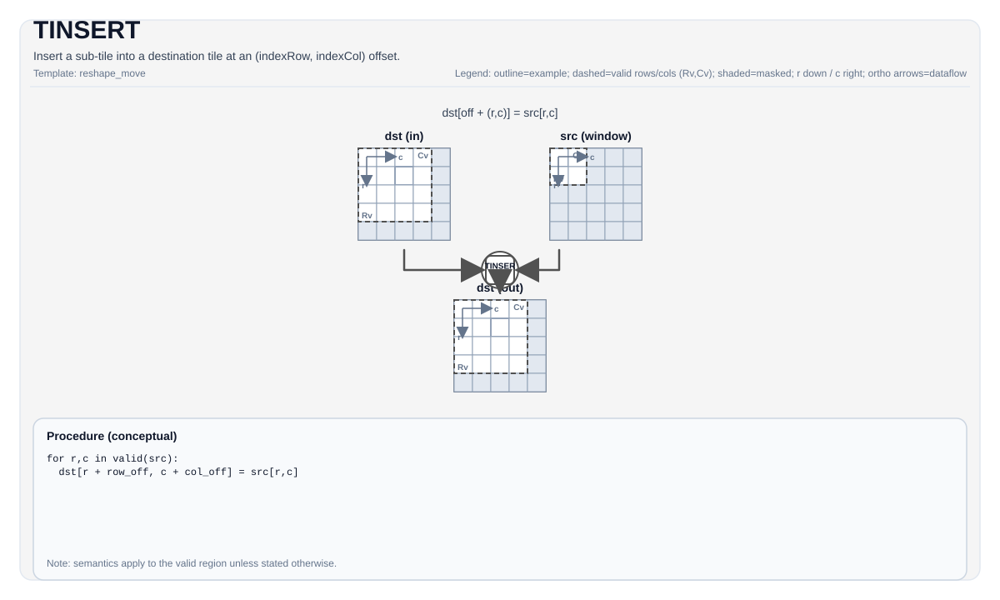

TINSERT¶
Tile Operation Diagram¶

Introduction¶
Insert a source sub-tile into a destination tile at (indexRow, indexCol). Conceptually the inverse of TEXTRACT.
TINSERT is used for:
- Acc → Mat insertion (with optional relu, scalar-quant, or vector-quant)
- Acc → Vec insertion (with optional
AccToVecMode, relu, scalar-quant, or vector-quant) (A5) - Vec → Mat insertion (ND, NZ, and ZN layouts) (A5)
- Vec → Vec insertion (ND and NZ layouts) (A5)
- NZ split insertion (
SPLIT2,SPLIT4) (A5)
Math Interpretation¶
Let R = src.GetValidRow() and C = src.GetValidCol(). For 0 <= i < R and 0 <= j < C:
Assembly Syntax¶
Synchronous form:
%dst = tinsert %src[%r0, %r1] : !pto.tile<...> -> !pto.tile<...>AS Level 1 (SSA)¶
%dst = pto.tinsert %src, %idxrow, %idxcol : (!pto.tile<...>, dtype, dtype) -> !pto.tile<...>AS Level 2 (DPS)¶
pto.tinsert ins(%src, %idxrow, %idxcol : !pto.tile_buf<...>, dtype, dtype) outs(%dst : !pto.tile_buf<...>)IR Level 1 (SSA)¶
%dst = pto.tinsert %src[%r0, %r1] : !pto.tile<...> -> !pto.tile<...>IR Level 2 (DPS)¶
pto.tinsert ins(%src[%r0, %r1] : !pto.tile_buf<...>) outs(%dst : !pto.tile_buf<...>)C++ Intrinsic¶
Declared in include/pto/common/pto_instr.hpp:
template <typename DstTileData, typename SrcTileData, typename... WaitEvents>
PTO_INST RecordEvent TINSERT(DstTileData &dst, SrcTileData &src,
uint16_t indexRow, uint16_t indexCol,
WaitEvents &... events);
template <typename DstTileData, typename SrcTileData, ReluPreMode reluMode,
typename... WaitEvents>
PTO_INST RecordEvent TINSERT(DstTileData &dst, SrcTileData &src,
uint16_t indexRow, uint16_t indexCol,
WaitEvents &... events);
template <typename DstTileData, typename SrcTileData, AccToVecMode mode,
ReluPreMode reluMode = ReluPreMode::NoRelu, typename... WaitEvents>
PTO_INST RecordEvent TINSERT(DstTileData &dst, SrcTileData &src,
uint16_t indexRow, uint16_t indexCol,
WaitEvents &... events);
template <typename DstTileData, typename SrcTileData,
ReluPreMode reluMode = ReluPreMode::NoRelu, typename... WaitEvents>
PTO_INST RecordEvent TINSERT(DstTileData &dst, SrcTileData &src,
uint64_t preQuantScalar,
uint16_t indexRow, uint16_t indexCol,
WaitEvents &... events);
template <typename DstTileData, typename SrcTileData, AccToVecMode mode,
ReluPreMode reluMode = ReluPreMode::NoRelu, typename... WaitEvents>
PTO_INST RecordEvent TINSERT(DstTileData &dst, SrcTileData &src,
uint64_t preQuantScalar,
uint16_t indexRow, uint16_t indexCol,
WaitEvents &... events);
template <typename DstTileData, typename SrcTileData, typename FpTileData,
ReluPreMode reluMode = ReluPreMode::NoRelu, typename... WaitEvents>
PTO_INST RecordEvent TINSERT_FP(DstTileData &dst, SrcTileData &src,
FpTileData &fp,
uint16_t indexRow, uint16_t indexCol,
WaitEvents &... events);
template <typename DstTileData, typename SrcTileData, typename FpTileData,
ReluPreMode reluMode = ReluPreMode::NoRelu, typename... WaitEvents>
PTO_INST RecordEvent TINSERT(DstTileData &dst, SrcTileData &src,
FpTileData &fp,
uint16_t indexRow, uint16_t indexCol,
WaitEvents &... events);
template <typename DstTileData, typename SrcTileData, typename FpTileData,
AccToVecMode mode, ReluPreMode reluMode = ReluPreMode::NoRelu,
typename... WaitEvents>
PTO_INST RecordEvent TINSERT(DstTileData &dst, SrcTileData &src,
FpTileData &fp,
uint16_t indexRow, uint16_t indexCol,
WaitEvents &... events);
#ifdef PTO_NPU_ARCH_A5
template <TInsertMode mode, typename DstTileData, typename SrcTileData,
typename... WaitEvents>
PTO_INST RecordEvent TINSERT(DstTileData &dst, SrcTileData &src,
uint16_t indexRow = 0, uint16_t indexCol = 0,
WaitEvents &... events);
#endifTINSERT_FP(...) is retained for source compatibility with the legacy fp-quantized form and maps directly
to the no-mode TINSERT_IMPL(dst, src, fp, indexRow, indexCol) path. The canonical
TINSERT(..., fp, ...) overload is selected only for FpTileData::Loc == TileType::Scaling.
Constraints¶
General constraints / checks¶
TINSERThas these overload families:- plain insert:
TINSERT(dst, src, indexRow, indexCol) - relu form:
TINSERT<..., reluMode>(dst, src, indexRow, indexCol) - accumulator-to-vector form:
TINSERT<..., mode, reluMode>(dst, src, indexRow, indexCol) - scalar-quant form:
TINSERT<..., reluMode>(dst, src, preQuantScalar, indexRow, indexCol)andTINSERT<..., mode, reluMode>(dst, src, preQuantScalar, indexRow, indexCol) - vector-quant form: canonical
TINSERT<..., FpTileData, reluMode>(dst, src, fp, indexRow, indexCol), legacyTINSERT_FP<..., reluMode>(dst, src, fp, indexRow, indexCol), and target-supportedTINSERT<..., FpTileData, mode, reluMode>(dst, src, fp, indexRow, indexCol)Acc-to-Vec routing - NZ split form (A5 only):
TINSERT<TInsertMode::SPLIT2>(dst, src, indexRow, indexCol)orTINSERT<TInsertMode::SPLIT4>(...)
- plain insert:
reluModeisReluPreMode::{NoRelu, NormalRelu}.modeisAccToVecMode::{SingleModeVec0, SingleModeVec1, DualModeSplitM, DualModeSplitN}. The vector-quantizedfp + modeoverload is exposed only on targets with matching backend support (A5, kirin9030, kirinX90, and CPU simulator).- Runtime bounds:
indexRow + src.ValidRow <= dst.RowsandindexCol + src.ValidCol <= dst.Cols.
A2A3 implementation checks¶
- Supported tile-type pair:
TileType::Acc → TileType::Matonly. - Source layout must be
(BFractal: ColMajor, SFractal: RowMajor). - Destination layout must be
(BFractal: ColMajor, SFractal: RowMajor)withSFractalSize == 512. Dst.Cols * sizeof(DstDType)must be a multiple of32bytes and non-zero.- Plain / relu (non-quant) supported dtype pairs:
floatAcc →half,bfloat16_t
- Scalar-quant supported dtype pairs:
floatAcc →int8_tint32_tAcc →int8_t,uint8_t,half,int16_t
- Vector-quant (
TINSERTwithFpTileData; legacyTINSERT_FPalias) supported dtype pairs:floatAcc →int8_tint32_tAcc →int8_t,uint8_t,half,int16_t
- The canonical vector-quant overload requires an
FpTileDatascaling operand (TileType::Scaling);TINSERT_FP(...)keeps legacy source compatibility and is checked by the selected backend implementation.
A5 implementation checks¶
-
In addition to the Acc → Mat path, A5 supports Acc → Vec, Vec → Vec, Vec → Mat, and NZ split paths.
-
Acc → Mat (
TileType::Acc → TileType::Mat):- Source Acc type must be
floatorint32_t; source layout must be(BFractal: ColMajor, SFractal: RowMajor). - Destination layout must be
(!isRowMajor, SFractal: RowMajor)(NZ format). - Non-quant (plain / relu) destination types:
floatAcc →half,bfloat16_t,floatint32_tAcc →int32_t
- Scalar-quant destination types:
floatAcc →int8_t,uint8_t,hifloat8_t,half,bfloat16_t,float8_e4m3_tint32_tAcc →int8_t,uint8_t,half,bfloat16_t
- Vector-quant (
TINSERTwithFpTileData; legacyTINSERT_FPalias) destination types: same as scalar-quant above.
- Source Acc type must be
-
Acc → Vec (
TileType::Acc → TileType::Vec):- Source Acc type must be
floatorint32_t; source layout must be(BFractal: ColMajor, SFractal: RowMajor). - Non-quant (plain / relu) destination types:
floatAcc →half,bfloat16_t,floatint32_tAcc →int32_t
- Scalar-quant destination types:
floatAcc →int8_t,uint8_t,hifloat8_t,half,bfloat16_t,float8_e4m3_tint32_tAcc →int8_t,uint8_t,half,bfloat16_t
- Vector-quant (
TINSERTwithFpTileData; legacyTINSERT_FPalias) destination types: same as scalar-quant above. - Destination layout must be one of: NZ-to-NZ (
!isRowMajor, SFractal: RowMajor), NZ-to-ND (isRowMajor, SFractal: NoneBox), or NZ-to-DN (!isRowMajor, SFractal: NoneBox). AccToVecModeselectsSingleModeVec0,SingleModeVec1,DualModeSplitM, orDualModeSplitN.- Dual-destination modes (
DualModeSplitM,DualModeSplitN) requireQuantMode_t::NoQuantand do not support the NZ-to-DN path. - For 32-bit destination types (
float/int32_t), when usingDualModeSplitNtheValidCol(before the split) must be a multiple of32. - Destination stride must be non-zero and
dstStride * sizeof(dstType)must be a multiple of32bytes.
- Source Acc type must be
-
Vec → Vec (
TileType::Vec → TileType::Vec):DstTileData::DTypemust equalSrcTileData::DType.- Supported element types:
half,bfloat16_t,float,int32_t,int8_t,hifloat8_t,float8_e4m3_t,float8_e5m2_t,float8_e8m0_t,float4_e2m1x2_t,float4_e1m2x2_t. - Source and destination layout must match (both ND or both NZ).
- ND path: source valid region must fit within destination bounds. Dispatch selects
copy_ubuf_to_ubuf(aligned),vlds/vsts(stride-aligned, unaligned validCol),vlds/vstus(unaligned strides or indexCol), or scalar copy (1×1 element). - NZ path: source cols must not exceed destination cols. Uses
ComputeNZBlockParamsfor fractal-blockcopy_ubuf_to_ubuf.
-
Vec → Mat (
TileType::Vec → TileType::Mat, UB → L1):DstTileData::DTypemust equalSrcTileData::DType.- Supported element types:
half,bfloat16_t,float,int32_t,int8_t,hifloat8_t,float8_e4m3_t,float8_e5m2_t,float8_e8m0_t,float4_e2m1x2_t,float4_e1m2x2_t. - ND path: source must be
isRowMajor; usescopy_ubuf_to_cbuf. Data bytes per row must be aligned toBLOCK_BYTE_SIZE(32 bytes) for row-wise burst. - NZ path: source must be
(!isRowMajor, SFractal: RowMajor); usesComputeNZBlockParamsfor fractal-blockcopy_ubuf_to_cbuf. For fp4 types (float4_e2m1x2_t,float4_e1m2x2_t), validCol and indexCol are halved for byte addressing. - ZN path: source and destination must both be
(isRowMajor, SFractal: ColMajor); usesComputeZNBlockParamsfor fractal-blockcopy_ubuf_to_cbuf. ZN is the transpose-dual of NZ: rows are the fractal dimension and columns are the free dimension.indexRowandvalidRowmust be aligned to the fractal row size (BLOCK_BYTE_SIZE / sizeof(T));indexColandvalidColare unconstrained (free dimension), matching the NZ row dimension. For fp4 types (float4_e2m1x2_t,float4_e1m2x2_t), validRow and indexRow are halved for byte addressing.
-
NZ Split (
TInsertMode::SPLIT2/TInsertMode::SPLIT4, A5 only):- Destination must be
TileType::Mat; source must beTileType::Vec. DstTileData::DTypemust equalSrcTileData::DType.- Source must be NZ format:
(!isRowMajor, SFractal: RowMajor). - Supported element types:
half,bfloat16_t,float,int32_t,int8_t,hifloat8_t,float8_e4m3_t,float8_e5m2_t,float8_e8m0_t,float4_e2m1x2_t,float4_e1m2x2_t. validRowis aligned up toFRACTAL_NZ_ROW(16) for burst calculation.- Splits the
copy_ubuf_to_cbuftotal burst into 2 or 4 sub-transfers, each handlingtotalBurstNum / SplitCountcolumn blocks (last sub-transfer takes the remainder).
- Destination must be
Examples¶
Auto¶
#include <pto/pto-inst.hpp>
using namespace pto;
// Vec -> Mat insertion (NZ layout)
void example_auto() {
using SrcT = Tile<TileType::Vec, half, 16, 32, BLayout::ColMajor, 16, 32, SLayout::RowMajor>;
using DstT = Tile<TileType::Mat, half, 16, 32, BLayout::ColMajor, -1, -1, SLayout::RowMajor>;
SrcT src;
DstT dst(16, 32);
TINSERT(dst, src, /*indexRow=*/0, /*indexCol=*/0);
}Manual¶
#include <pto/pto-inst.hpp>
using namespace pto;
// Vec -> Mat insertion (NZ layout, manual buffer assignment)
void example_manual() {
using SrcT = Tile<TileType::Vec, half, 16, 32, BLayout::ColMajor, 16, 32, SLayout::RowMajor>;
using DstT = Tile<TileType::Mat, half, 16, 32, BLayout::ColMajor, -1, -1, SLayout::RowMajor>;
SrcT src;
DstT dst(16, 32);
TASSIGN(src, 0x0);
TASSIGN(dst, 0x0);
TINSERT(dst, src, /*indexRow=*/0, /*indexCol=*/0);
}ASM Form Examples¶
Auto Mode¶
# Auto mode: compiler/runtime-managed placement and scheduling.
%dst = pto.tinsert %src, %idxrow, %idxcol : (!pto.tile<...>, dtype, dtype) -> !pto.tile<...>Manual Mode¶
# Manual mode: resources must be bound explicitly before issuing the instruction.
# Optional for tile operands:
# pto.tassign %arg0, @tile(0x1000)
# pto.tassign %arg1, @tile(0x2000)
%dst = pto.tinsert %src, %idxrow, %idxcol : (!pto.tile<...>, dtype, dtype) -> !pto.tile<...>PTO Assembly Form¶
%dst = tinsert %src[%r0, %r1] : !pto.tile<...> -> !pto.tile<...>
# AS Level 2 (DPS)
pto.tinsert ins(%src, %idxrow, %idxcol : !pto.tile_buf<...>, dtype, dtype) outs(%dst : !pto.tile_buf<...>)